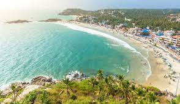
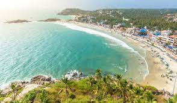

Thiruvananthapuram
Thiruvananthapuram (or Trivandrum) is the capital of the southern Indian state of Kerala. It's distinguished by its British colonial architecture and many art galleries. It’s also home to Kuthira Malika (or Puthen Malika) Palace, adorned with carved horses and displaying collections related to the Travancore royal family, whose regional capital was here from the 18th–20th centuries.
How many places to visit in Trivandrum?
22 Best Tourist Places in Trivandrum
Kuthiramalika (Puthenmalika) Palace Museum, Padmanabhapuram Palace, Napier Museum, The Kanakakunnu Palace, Priyadarshini Space Planetarium, Vizhinjam Rock-cut Cave, Thiruvananthapuram Zoo, Attukal Bhagavathy Temple, Vizhinjam Lighthouse, Magic Planet, Padmanabhaswamy Temple and many more places.
 
